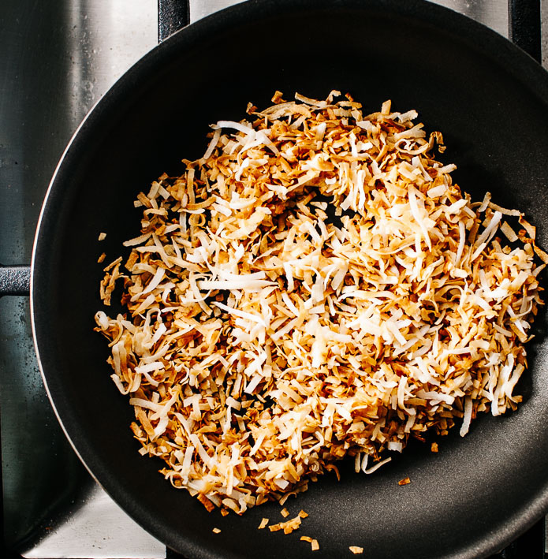
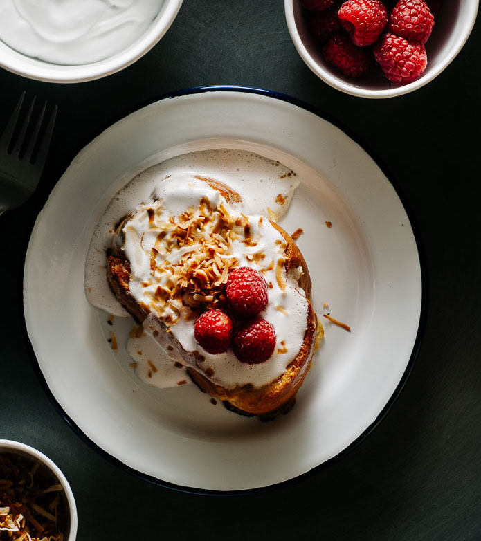

Anyway, chocolate advent calendars don’t have anything to do with this coconut tres leches French toast. Tres Leches cake, if you haven’t had it, is a absolutely delicious concoction of a light and fluffy yet dense sponge cake drenched in three kinds of milk. I French-toast-ified it here because I love the milky sweet flavors. Toasted coconut and whipped coconut milk add an extra bit of indulgence and tart raspberries brighten up the whole works.
The ingredient list looks a bit long, but really, these guys whip up in a flash. If you must make it easier and skip out on one thing, I’d say use regular whipped cream instead of coconut whipped cream. But really, coconut whipped cream is SO GOOD. This is totally dessert for breakfast, which seems to be my jam lately and is so weird because I’m usually obsessed with savories. Guess the holiday season just makes me feel extra sweet!
Ingredientes
Add the coconut flakes to a dry pan and toast over medium heat, stirring frequently, until flakes are golden brown and toasty. Remove from the pan and set aside. Flip the coconut can upside down and open. Pour the separated coconut water into a bowl and reserve for other uses. Spoon out the thickened cream into a large chilled bowl. Beat with a hand mixer until fluffy and thick. Add the sugar and whip until dissolved. Set aside in the fridge.